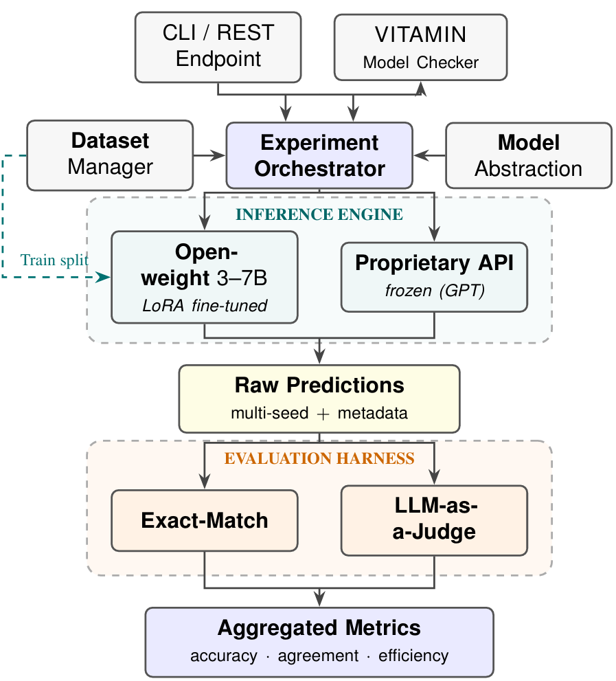
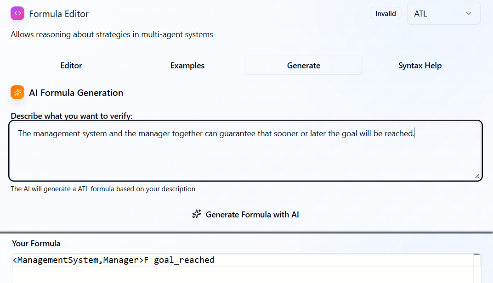
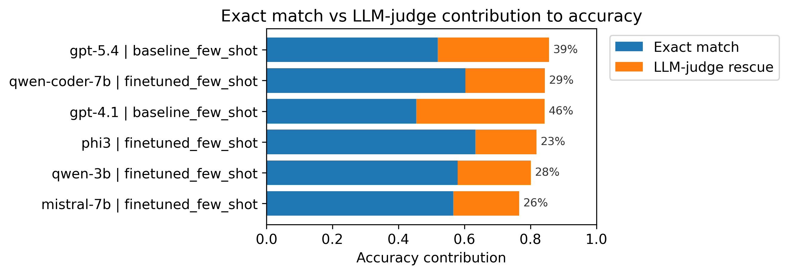
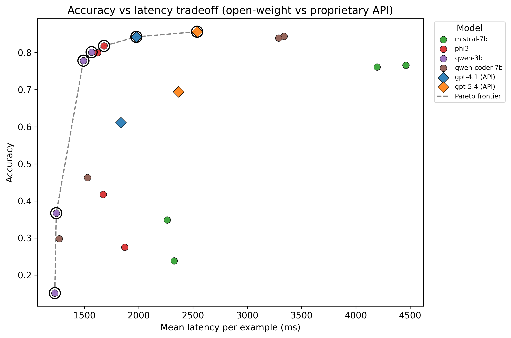

"...the system and the manager together can guarantee that sooner or later the goal is reached." → <<System,Manager>>Fgoal_reached
Aruta · Improta · Malvone · Murano · Perlić · Naples Federico II & Télécom Paris
A joint project
How we split the work
Co-authors (formal verification)
The dataset
The logic & the linguistics
My part
Framework & fine-tuning
Evaluation & judge
Model-checker integration
Today I'll keep the logic short and spend the time on the modelling and evaluation.
Two results, up front
What the talk builds to
0.84vs0.86
A fine-tuned 3–7B open model matches a frontier API — on your own hardware.
Llama‑70B
The best judge of these translations was the open-weight model, not the strongest API.
1
The problem
Motivation
Writing the specification is the bottleneck
Model checking is only as good as the formula you give it.
Writing correct strategic specs needs a rare expert.
Requirements start as ambiguous natural language; verification needs the opposite.
The task, concretely
One sentence → one formula
"The system and the manager together can guarantee that sooner or later the goal is reached."
<<System,Manager>>Fgoal_reached
<<…>> the coalition & its strategy
F temporal goal: "eventually"
goal_reached atomic proposition
Why it's new
Temporal logics: done. Strategic logics: not.
Target logic
NL → logic?
Dataset?
LTL / STL / CTL
yes
yes
ATL / ATL* (strategic)
none
none
No model, no dataset, no tool for the strategic, multi-agent case.
What makes it hard
Ambiguity: one sentence, two required readings
"Every rover can guarantee it never enters a hazardous area."
distributive — each rover, its own area
<<Rover1>>G!hazard_1&& … &&<<Rover3>>G!hazard_3
collective — the coalition, one area
<<Rover1,Rover2,Rover3>>G!hazard
Both readings are gold — the model must produce both.
2
The dataset
The foundation everything else rests on.
The resource
1100 expert-written NL ↔ ATL/ATL* pairs
Hand-written by two experts, validated by three.
First dataset for NL → strategic logic.
Balanced operators; five ambiguity families.
1100
instances
One design choice that matters later
The gold answer can be a set of formulas
Ambiguous inputs have several jointly-required formulas.
"Correct" = produced all of them.
This shapes the training target, the exact-match check, and the judge.
3
The framework
Architecture
One pipeline, local and cloud behind one interface

Why open-weight
Local first — requirements are confidential
Open-weight models fine-tuned and run on-premises.
Cloud API through the same interface, when data sensitivity allows.
Industrial requirements are IP — often they can't leave the building at all.
The experiment grid
Two knobs, four conditions
zero-shot
few-shot
baseline (frozen)
ZS
FS
fine-tuned
ZS
FS
Few-shot: examples in the prompt, weights frozen. Fine-tuning: actually change the weights.
Proprietary models: baseline row only (can't fine-tune them).
The AI part worth explaining
Cheap fine-tuning: LoRA / QLoRA
W′ = Wfrozen + B·A
train only the small B, A (low rank)
Freeze the model; learn a tiny low-rank patch.
QLoRA: 4-bit base → a 7B model on one GPU.
Fits a narrow domain with modest data.
The line-up
Four open models we fine-tune, two APIs we prompt
Model
Size
Role
qwen-3b / phi3
3–3.8B
fine-tuned + baseline
qwen-coder-7b / mistral-7b
7B
fine-tuned + baseline (4-bit)
gpt-4.1 / gpt-5.4
API
few-shot baselines
A code model is in the mix because ATL syntax is code-like. Exact versions in backup.
From formula to verification
Wired into the VITAMIN model checker

Translation as a small service; a light patch calls it.
Falls back to native generation if it's unavailable.
The checker's own parser rejects anything ill-formed.
4
Measuring "correct"
The measurement problem
Exact string match punishes correct answers
gold
<<Doctor>>Fdischarged
prediction
<<Doctor>>Fpatient_discharged
≠
Same meaning. Different string. Exact match says wrong.
Why not check equivalence formally?
It doesn't fit this setting
No shared model. Propositions & agents are grounded in the sentence, not a fixed game structure — discharged and patient_discharged are different symbols to a checker.
Cost. ATL* equivalence is expensive anyway.
We check the right thing: is the strategic-temporal intent preserved?
The meaning-level check
LLM-as-a-judge — only where exact match failed
prediction→exact match?→yes = correct
prediction↓ nojudge: same intent?→correct / not
accuracy = exact-match floor + judge-recovered
Who judges the judge?
Six judges, checked against human experts
Six independent LLM judges, one rubric.
Expert audit of 599 predictions: two annotators, κ = 0.99.
Headline uses the most human-aligned judge.
judges benchmarked
DeepSeekGPT-4.1GPT-5.2GPT-5.4Gemma-27BLlama-70B
5
Results
Result 1
Small fine-tuned open models match a frontier API
Model
baseline
fine-tuned
ZS
FS
ZS
FS
proprietary API
gpt-4.1
0.61
0.84
–
–
gpt-5.4
0.69
0.86
–
–
open-weight (local)
qwen-3b
0.15
0.37
0.78
0.80
phi3
0.28
0.42
0.80
0.82
qwen-coder-7b
0.30
0.46
0.84
0.84
mistral-7b
0.24
0.35
0.76
0.77
gpt-5.4 0.856 vs qwen-coder-7b 0.844 — a statistical tie.
Why exact match alone misleads
How much the judge recovers

■ exact match ■ judge
Proprietary lean on the judge most (up to 46%).
They paraphrase more — remember that.
Deployment
Accuracy vs latency

Two fastest fine-tuned open models are also near the top.
qwen-3b, phi3 faster than both APIs; circles = open, diamonds = API.
Result 2
The most reliable judge was the open-weight one
judge vs human
agree
κ
Llama-70B
82%
0.59
DeepSeek
74%
0.46
GPT-4.1
73%
0.44
Gemma-27B
59%
0.25
GPT-5.4
57%
0.24
GPT-5.2
51%
0.16
The strongest, newest proprietary models were the worst judges.
Why — and it's simple
The strong models are pedantic about paraphrases
discharged# gold vs patient_discharged# prediction — same structure
On 1167 items GPT-5.4 & GPT-5.2 rejected what Llama accepted.
Humans sided with Llama 160 to 26; zero the other way.
GPT-5.4 even marks down its own outputs (0.63 vs 0.86).
Where everyone still struggles
Ambiguity is the residual difficulty
system
single
QSA
gpt-5.4
0.88
0.68
qwen-coder-7b
0.88
0.63
phi3
0.87
0.49
qwen-3b
0.88
0.33
Single-reading: uniformly high (~0.87).
Quantifier scope: everyone drops — must emit both readings.
Only 31 QSA items, so read it as a trend, not a ranking.
6
Wrap-up
Honest limits
What this doesn't do
Curated, English-only dataset — not in-the-wild requirements.
The metric is a validated estimate (judge–human κ is moderate).
Confidence intervals cover the seed, not test-set resampling (~±0.06).
Scope is ATL/ATL* — not Strategy Logic or epistemic logics.
Equivalence by intent, not by formal model checking.
Contributions
What we release, and what's next
Released (MIT)
The dataset (co-authors)
Framework + fine-tuned models
Evaluation + judge protocol
Model-checker integration
Next
Grow the dataset with the community
Richer logics (Strategy Logic, epistemic)
Feed checker feedback into disambiguation
Thank you
In one line
A fine-tuned small open model matches a frontier API, on-premises — and the best judge of the translations was the open-weight one.
Questions welcome.
Code, dataset, prompts — open-source. Backup slides follow for details.
Aruta · Improta · Malvone · Murano · Perlić
+
Backup
For questions.
Backup · training
Fine-tuning & LoRA settings
Model
4-bit
r
α
batch×acc.
mistral-7b
yes
32
64
2×16
qwen-3b
no
64
128
8×4
phi3
no
32
64
6×6
qwen-coder-7b
yes
64
128
4×8
8 epochs, paged 8-bit AdamW, cosine (0.1 warmup), lr 1e-4, wd 0.01, grad-clip 0.3, bf16, max seq 1536. Greedy decode, 3 seeds (42/43/44). LoRA on attention + MLP.
Backup · provenance
Exact versions
Model
Checkpoint / snapshot
qwen-3b
Qwen2.5-3B-Instruct @ aa8e7253
phi3
Phi-3.5-mini-instruct @ 2fe19245
qwen-coder-7b
Qwen2.5-Coder-7B-Instruct @ c03e6d35
mistral-7b
Mistral-7B-Instruct-v0.3 @ c170c708
gpt-4.1 / gpt-5.4
gpt-4.1-2025-04-14 / gpt-5.4-2026-03-05
local judges
Gemma-2-27B @ aaf20e6b · Llama-3.3-70B @ 6f6073b4
Azure API version 2024-08-01-preview, temperature 0.
Backup · data split
Where 218 test items comes from
1100−7 exemplars109370/10/20765 / 110 / 218
7 few-shot exemplars held out of every split (no leakage).
Stratified on single- vs multi-reading; train augmented 2× (paraphrase), val/test verbatim.
Test = 187 single + 31 QSA.
Backup · reading κ
Cohen's κ scale (Landis–Koch)
κ
agreement
0.01–0.20
slight
0.21–0.40
fair
0.41–0.60
moderate
0.61–0.80
substantial
0.81–1.00
almost perfect
Best judge (Llama, 0.59) = moderate. Humans with each other (0.99) = almost perfect.
Moderate judge–human κ is why we call the numbers estimates.
Backup · judge prompt
What the judge is asked
Same strategic-temporal intent? Check coalition, modality & polarity, operators, scope.
For ambiguous inputs: all readings present.
Accept input-grounded aliases; reject real meaning changes.
Return a label + a short reason. Fixed prompt, all six judges, cached per judge.
Backup · robustness
Under a six-judge mean
system (ft, FS)
six-judge mean
qwen-coder-7b
0.731
phi3
0.728
gpt-5.4 (FS baseline)
0.681
Averaging in the strict judges lowers everything and nudges open-weight ahead (Δ≈0.05, p=0.03) — but that lead is the strict judges over-rejecting proprietary paraphrases. Under the human-aligned judge it's a tie. Honest reading: parity.
Backup · transparency
Provider content-filter events
The Azure filter blocked two inputs (a Shakespeare quote + one other).
Counted as incorrect (conservative); listed explicitly.
Ranking recomputed without them: no change.
Backup · context
Related NL → logic work
LTL: nl2spec, nl2ltl — often keep NL close to the syntax.
STL / CTL: He et al.; Zrelli et al.
Strategic (ATL/ATL*): no prior peer-reviewed work or dataset — our gap.